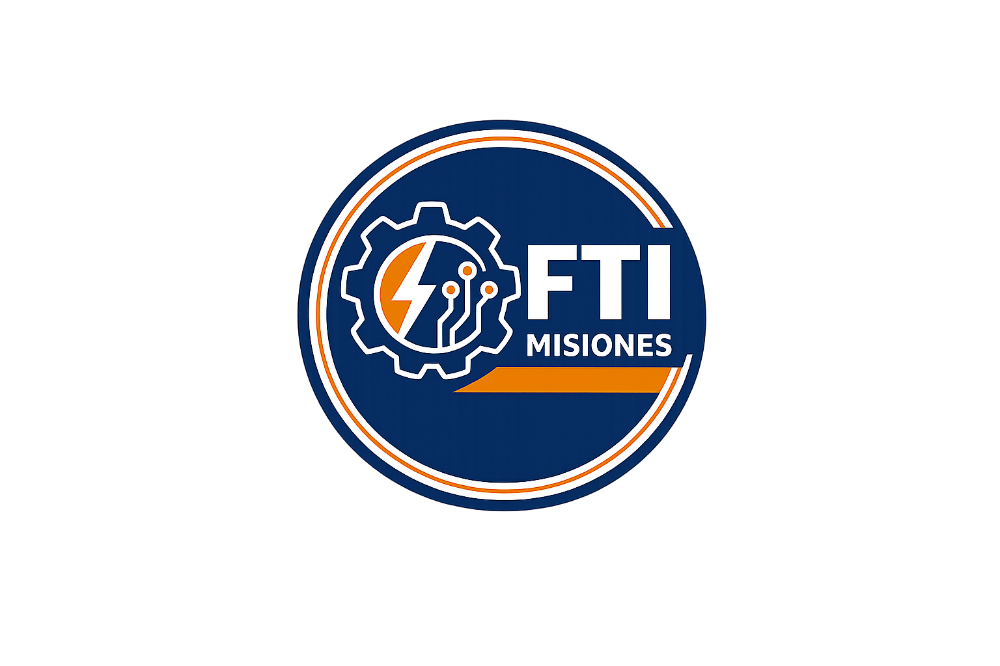

Formación práctica en electricidad y automatización para técnicos e industrias de Misiones.
Solicitar información por WhatsAppPráctica real con tableros, protecciones y maniobras industriales.
Diseño y conexión de circuitos de mando y potencia aplicados.
Análisis de fallas, seguridad eléctrica y mejora operativa.
Técnicos industriales, personal de mantenimiento y empresas que buscan reducir fallas, mejorar la seguridad y aumentar la eficiencia operativa.